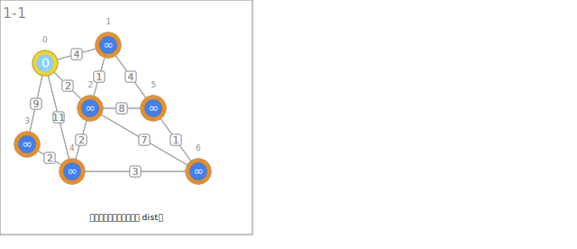
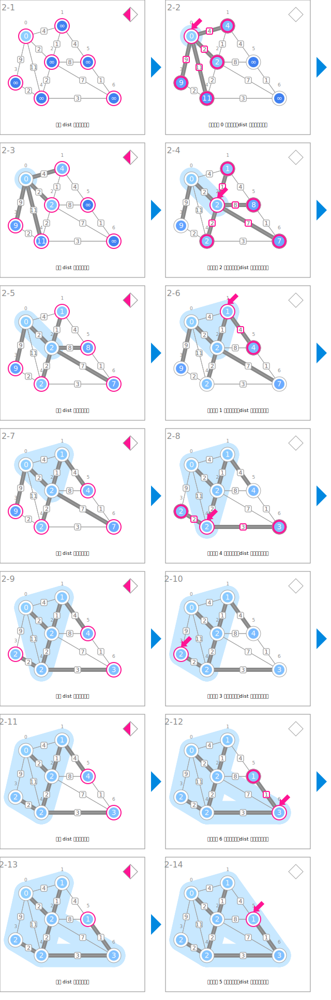

シンボル
| データ | ||
|---|---|---|
 | 連到 T 內節點的最小邊上的權重 | dist |
 | 最小生成樹中的父節點 | parent |
 | 節點間的距離 | weight |
| 決定起點與初始化 | ||
|---|---|---|
 | 選擇適當起點並將其 dist 初始化為 0。 | |
 | 將其餘節點的 dist 初始化為極大的值。 | |
| 建立最小生成樹 | ||
 | 尋找 dist 最小的節點。 | # find minimum |
 | 指向擁有最小權重的節點。 | u |
 | 更新節點的 dist 與 parent。 | dist[v] ← weight[u][v] parent[v] ← u |
 | 標示最小生成樹暫定要使用的邊。 | (v, parent[v]) |
 | 擴大最小生成樹。 | 將 u 新增至 T 內 |
| 輸出最小生成樹 | ||
 | 利用父節點的資訊建立最小生成樹。 | |
アニメーション
決定起點與初始化

建立最小生成樹

輸出最小生成樹